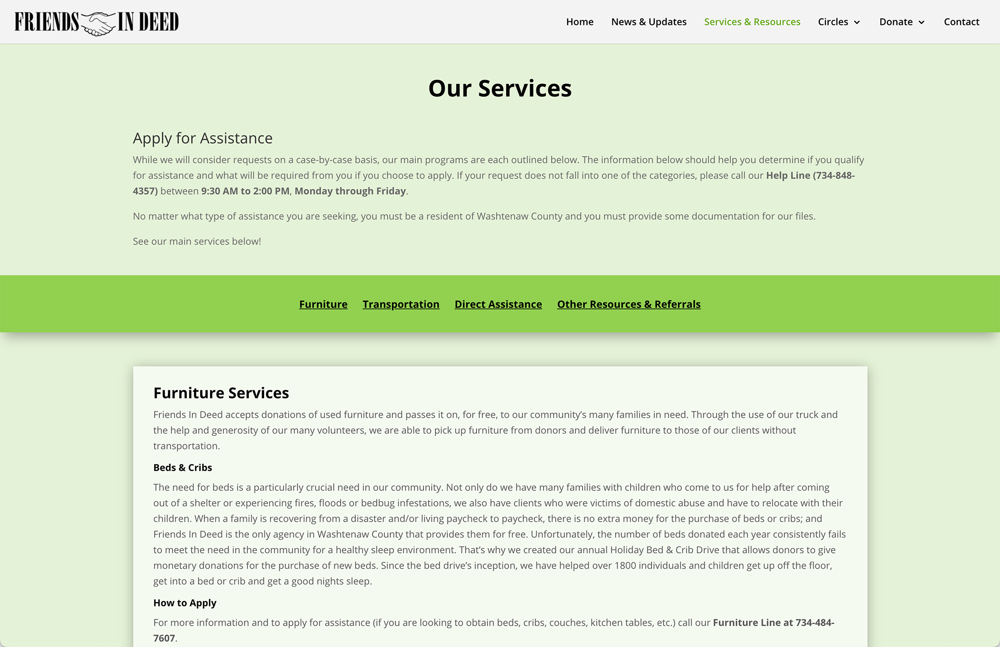
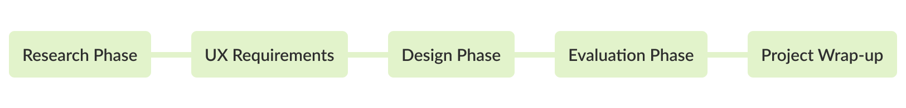
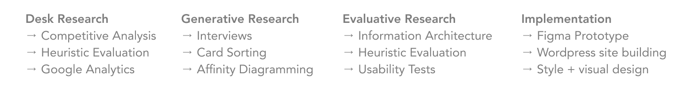
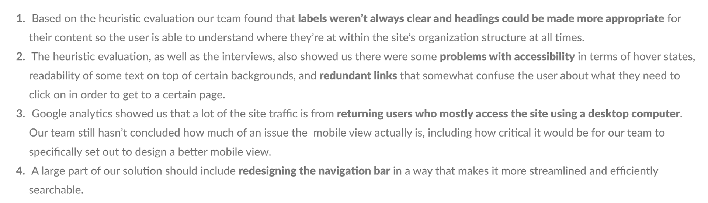
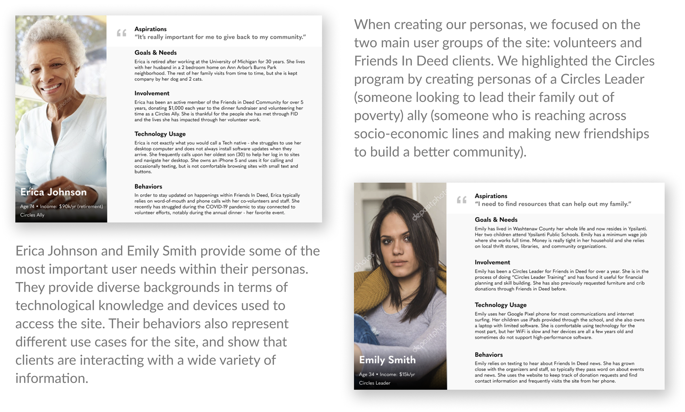
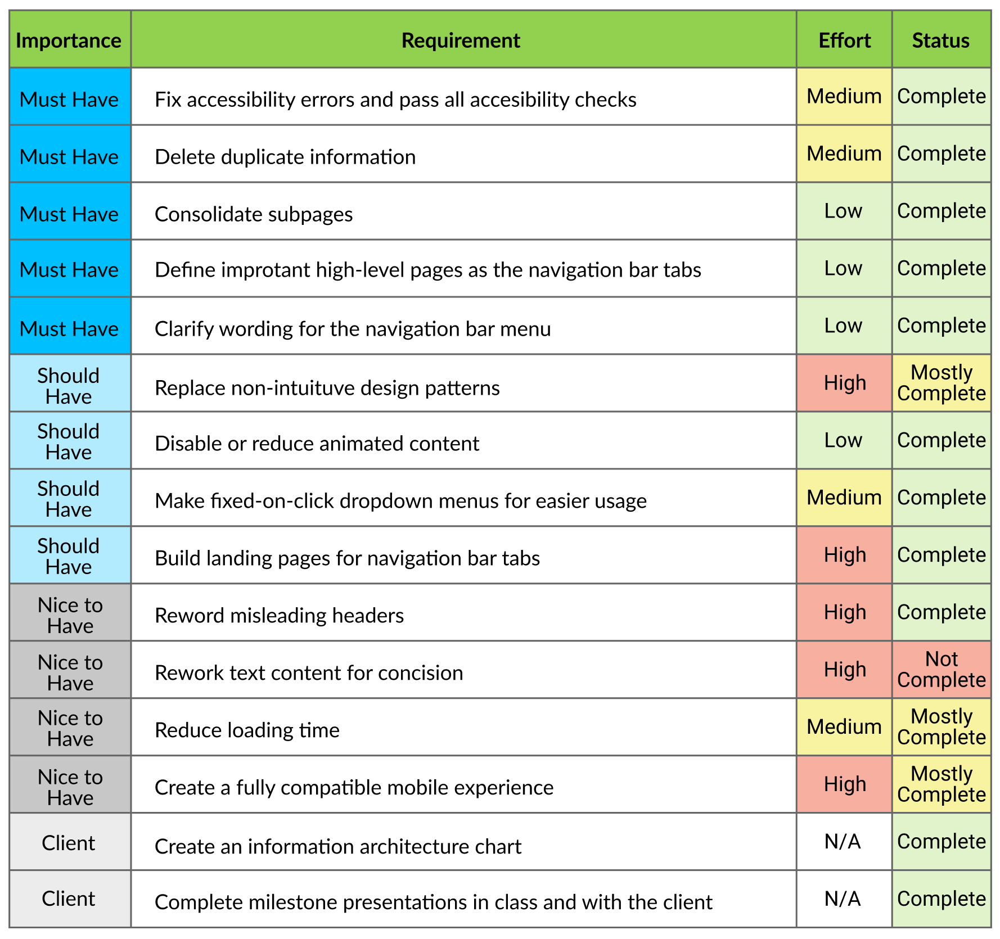
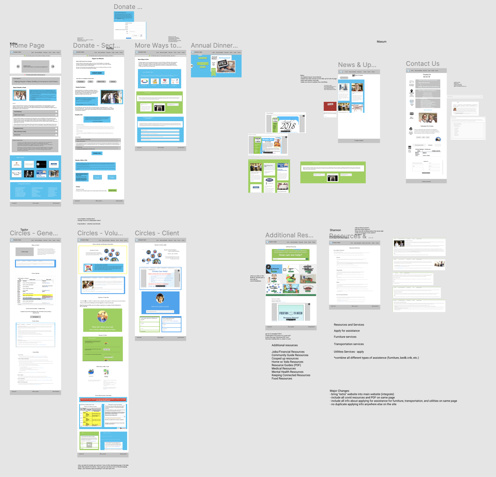
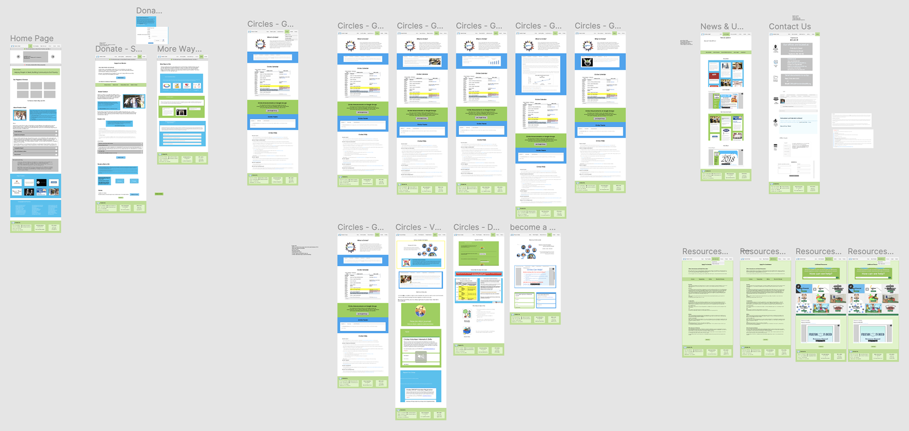
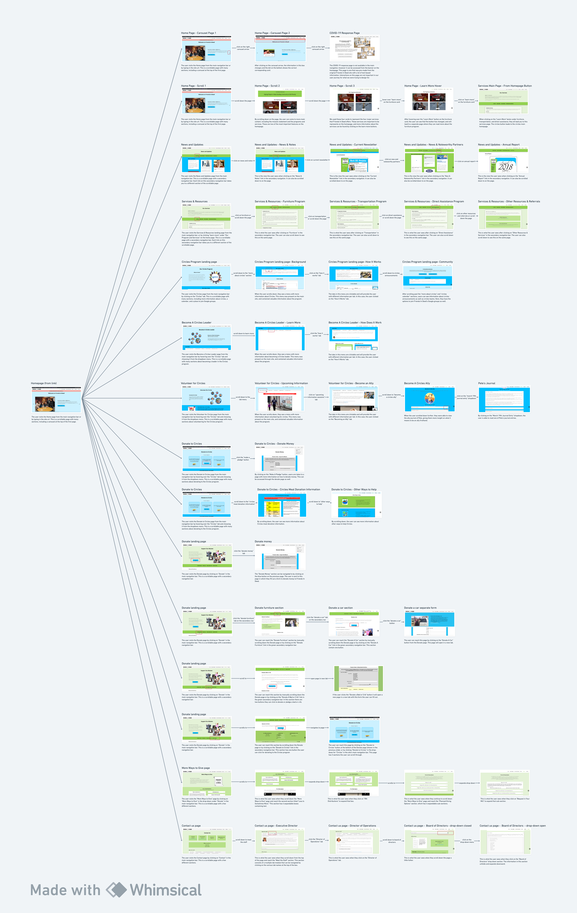

Friends In Deed Website Re-structure
Information Architecture Re-design for Non-profit Company “Friends In Deed” Website

About the Client
Friends In Deed is a local nonprofit organization, based in Ypsilanti, MI, whose primary goal is to address the concerns of those who belong to a lower socioeconomic class. They have been around for over 35 years (established June 5th, 1983) and offer various services to low income families within Washtenaw county. Their site: friendsindeedmi.org.
Problem Statement
The original Friends In Deed website struggled with accessibility, efficiency in user journeys, mobile-friendliness, and visual design. My team’s goal was to address the confusing and complex information architecture, establish a consistent and intuitive global navigation bar, and improve visual design to better reflect our client’s mission, using WordPress, to help donors give money, facilitate volunteer opportunities, and help people in need find resources easily.
Project Goals
- Consolidate the website’s information architecture
- Improve efficiency in critical user journeys (benchmark: 2 clicks or less for an important task)
- Improve accessibility by evaluating text readability and optimizing mobile responsiveness
Research Phase
Research questions: What is the current experience like for users on the site? What does the site’s information architecture currently look like, and how can it be improved?
Methodologies used: Competitive Analysis, Heuristic Evaluation, Interview Protocol, Research Results & Analysis, Themes & Insights, User Personas & Journeys, Resulting UX Requirements.
Design Phase
Low-fidelity wireframes — this first iteration solely focused on arranging content and layout, without worrying about aesthetics.
Mid-fidelity prototype — a clickable mid-fidelity prototype.
High-fidelity WordPress implementation — a few important issues became clear through the iterations: non-static seasonal fundraising info needed a designated location, a consistent global navigation was necessary across all pages, all services and programs required adequate saliency and discoverability, and contact/donation info needed to be easy to find.
Evaluation Phase
Research questions: Are there any accessibility issues on mobile or desktop? Is there any confusing wording? How many clicks does it take to perform basic tasks?
Metrics: number of clicks from homepage to end goal, time to perform tasks, SUS usability scale scores.
Findings: the new information architecture proved more successful for users finding information in less time and with fewer clicks; participants found the site well laid out with no problems in the secondary navigation or information architecture.
Project Wrap-up
Future client recommendations:
- Add a drop-down to the “Services & Resources” section as needed
- Limit homepage carousel slider items
- Add “phone” and “email” icons to the footer for easier identification
Overall takeaways:
- Flexibility, adaptability, and making changes to the original plan are necessary to deal with unexpected challenges.
- Consistent and frequent communication with the client is key for the project to be successful.
- Good inter-team communication about sharing responsibility and expectations is also important.
- Define and communicate scope as much as possible at the start, and keep the client updated on what’s feasible.
Open "Friends In Deed Wireframes" in Figma →
Project Gallery








Reference Materials
- Reference document (Google Doc)
- Project presentation (Google Slides)
- Reference document (Google Doc)
- Site map data (Google Sheet)
- Reference document (Google Doc)
- Reference document (Google Doc)